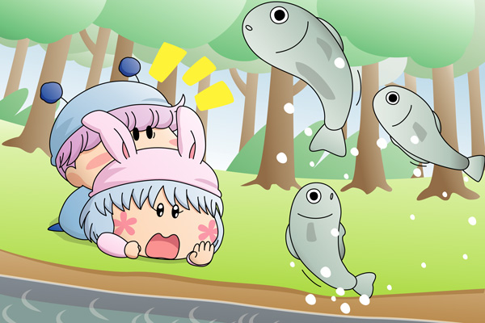

ムルモ「パピィ！ 待って欲しいでしゅ！
（なんて最悪な展開でしゅかね…）」
パピィ「もう！どうちて追ってくるのよ！」
ムルモ「パピィこそどうして逃げるんでしゅか！」
パピィ「ムルモが追ってくるからでちょ！
いいからあたちのことはほっときなちゃいよ！
……あっ」
ムルモ「ほえ～～っ」
全力疾走で逃げるパピィでしたが、草に足を引っかけて転んでしまいました。
ムルモもバランスを崩し、パピィの上に乗っかる形で転びました。
そしてパピィの持っていたチョコは…。
ポチャンッ
二人の目の前で何とチョコは川の中へゆっくり沈んでいきました。
パピィ「あ、あたちのチョコが…」
ムルモ「はっ、パピィ…これはしょの……。
チョコだったらボクも一緒に買いに行くでしゅ」
パピィ「お店じゃ売ってないわよ！
だって…あたちの手作りなのよ！」
ムルモ「！・・・」
パピィ「ちぇっかく作ったのに……ぐすっ」
今にも泣きそうなパピィを見てムルモは慌てました。
一方で、暖かい川の中に落ちていったチョコはパピィたちの目の前でゆっくりと溶けていきました。すると…。

バシャバシャバシャ…ザッパーンッ
何と川の中の魚たちがパピィめがけて向かってきました。
次から次へと空を舞う魚たちを見て二人はびっくりして固まりました。
ムルモ「ほぇ～～っ、お魚しゃんたちが！」
パピィ「あたちに向かってくるわ！」
ムルモ「とにかく逃げるでしゅよ」
ムルモはパピィの手を取って、森の方へと走って逃げました。
ムルモ「はぁはぁ、いったい何がどうなってるんでしゅか…」
パピィ「まったくだわ……あっ」
ムルモ「ほぇ？」
パピィ「な、何でもないわよ。
チョコに惚れ薬を入れたりなんてちてないわよ！」
ムルモ「な、何でしゅって～っ」
パピィ「あ！」
慌てて口を押さえるパピィ、ムルモは冷や汗で青ざめています。
パピィ「これはちょの…」
ムルモ「まったく、そんなもの入れる必要なんて全然ないのに…」
パピィ「…えっ、今のってどういう意味？」
ムルモ「何でもないでしゅ、独り言でしゅよ」
パピィがムルモに詰め寄ると、ムルモの顔は真っ赤に変わりました。
パピィ「もう一度言いなちゃいってば！」
ムルモ「ほぇ～っ、しょんなにしつこいと嫌われましゅよ！」
パピィ「余計なお世話よ！さぁ！！」
ムルモ「ほぇ～～っ」
空の上で、二人の追いかけっこが再び始まりました。
森の中からアロマはその追いかけっこを眺めていました。
アロマ「後でパピィちゃんには謝らなくちゃ…」
ムルモが落としたチョコを抱え、アロマは一人森を歩いていきました。
バレンタインデーからだいぶ過ぎましたが、今年のパピィとムルモのバレンタインデーは波乱の一日となりました（いつも通り？）。ちなみに惚れ薬入りのチョコですが、アニメでも登場したあのピンクの服を着た妖精からパピィは伝授してもらっていたりします。
オチというかラストが何となく重たい雰囲気になってしまいました(^^;。空気を読むのがあまり上手では無さそうなお嬢様なアロマは、今後もいろいろ苦労しながら生きていきそうです。そう…私の中ではアロマは苦労人のイメージなのです。
ムルモとパピィのラブラブなお話は書いている方も恥ずかしいわけですが、こんな素直に愛情を表現出来る二人がうらやましかったり(^^)。でも実際にこんな波乱がしょっちゅう起こったりすると恋をするのに疲れてしまいそうです。
(2007/2/27)